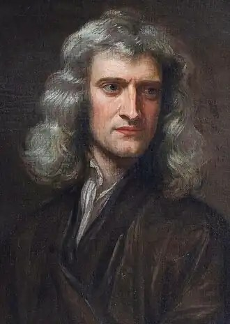
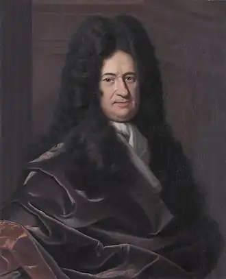
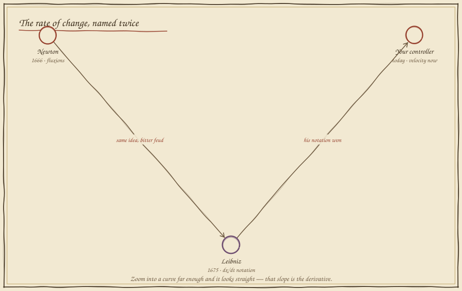
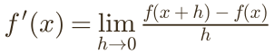

The Speed of Speed
In which the wheel encoder knows exactly where the robot has been and nothing about how fast it is going now, and two rivals invent the same escape.
Average speed answers the wrong question
The encoder reports position. To get velocity you do the obvious thing: take two readings, subtract, divide by the time between them. But over a wide window that gives the average speed — and while the robot is speeding up or slowing down, the average is never the speed it has right now. Widen the window and watch the estimate drift off the truth.
The wide secant line and the truth part ways the moment the robot's speed changes. The fix is daring and simple: make the window smaller — and keep shrinking it until the two readings are a hair apart. What the average speed becomes at that vanishing point is the speed at the instant.
The rate of change, named twice
Two men, working apart, caught the same idea within a decade — and then their followers fought about it for a century. The feud was bitter; the mathematics was identical, and it is the mathematics your controller runs.



Shrink the window to nothing
Here is the whole move. Keep the reading fixed and slide the window down toward zero. The line through the two points — the secant — pivots, and as the gap vanishes it settles onto the tangent: the line that grazes the curve at a single instant. Its slope is the derivative, the exact speed.

The tangent sees the future
Why controllers crave the instantaneous speed: it is the robot's best guess of what happens next. Stand at the current instant, follow the tangent forward a moment, and you have predicted the next position before it arrives. Slide along the run and check the prediction against reality.
Small look-ahead, near-perfect prediction; reach too far and the curve bends away from the straight tangent. Every model-predictive controller, every Kalman filter's "predict" step (Folio 20), every physics engine steps forward exactly this way — position plus velocity times a small slice of time.
What you can now build
Velocity and acceleration from raw position, the "D" in every PID controller, edge detection in vision, the gradients that train neural networks — all are derivatives, all are that vanishing window. Once you can take a rate of change, a robot stops merely knowing where it was and starts knowing where it is heading. Next, in Folio 12, we run the machine backwards: add up a stream of velocities to recover position, when no GPS will tell you.
Field exercise: in a car (as passenger), glance at the odometer every few seconds and note the gaps. Over a minute you get average speed; the speedometer needle shows the derivative — the same distance, measured over an interval so short it reads as "now."
continue to folio 12 — adding up motion return to the codex map